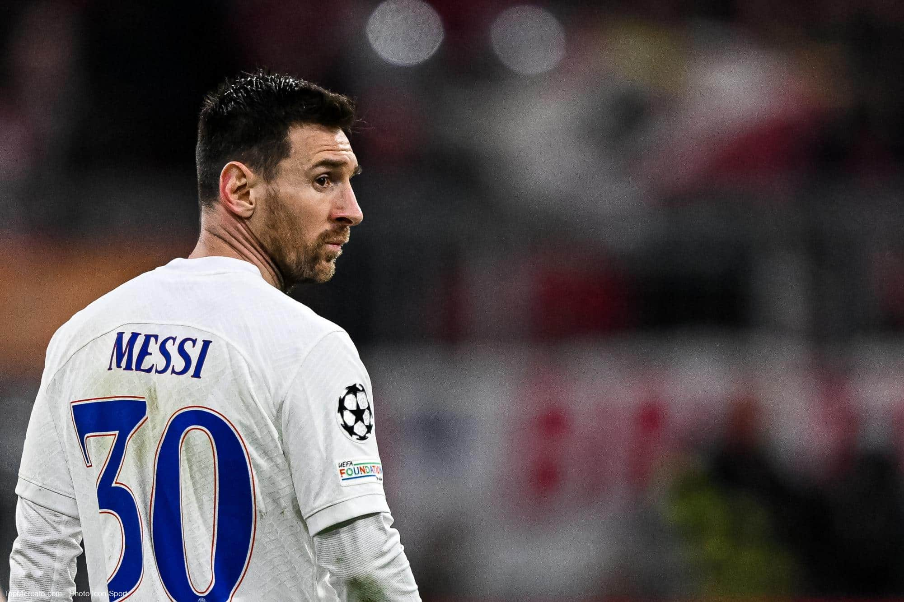

D'après une source proche du club, le départ de Lionel Messi du Paris Saint-Germain à la fin de son contrat en juin est désormais "beaucoup plus probable, mais pas certain". "Aucun accord n'a été signé, la dynamique a complètement changé avec le PSG qui pousse moins pour renouveler", poursuit cette source.

Le départ de Lionel Messi du Paris Saint-Germain à la fin de la saison est désormais "beaucoup plus
probable, mais pas certain", a-t-on appris mardi auprès d'une source proche du club, laissant augurer un
changement de cap du club. "La dynamique a complètement changé avec le PSG qui pousse moins pour renouveler,
l'attitude des supporters a complètement changé la donne", selon cette source.
Un possible échec sportif pour la "MNM"
Des sifflets contre l'Argentin sont descendus des tribunes dimanche lors du match perdu contre Lyon (1-0),
où il n'a qu'en de rares occasions montré son génie et a joué parfois en marchant. La si prestigieuse "MNM"
Messi-Neymar-Kylian Mbappé pourrait se terminer sur un échec sportif : avec son trio magique, le PSG n'a
remporté qu'un Championnat de France. Il est bien placé pour le gagner à nouveau cette saison mais reste sur
deux défaites d'affilée à domicile, contre Rennes (2-0) puis Lyon.
Selon certaines sources, Messi serait en train negocier son retour au FC Barcelone, dont un certain Xavi Hernandes serait ravi de retravailler avec lui mais en tant que coach de ce dernier.Son arrivée remettrai de l'espoir dans le coeur des dirigeants et aussi des supporters Catalan. Mais le FC barcelone ne sont pas le seul piste sur la Pulga, il y a Inter Miami dont Beckham plus précisement souhaite son arrivée et que les clubs du championnat MLS sont prêt à tous mettre le pactoles pour s'aligner sur le salaire de Messi. et aussi les club saoudiens qui sont aussi à lui donner un salaire équivaut plus de 400 millions d'euros.